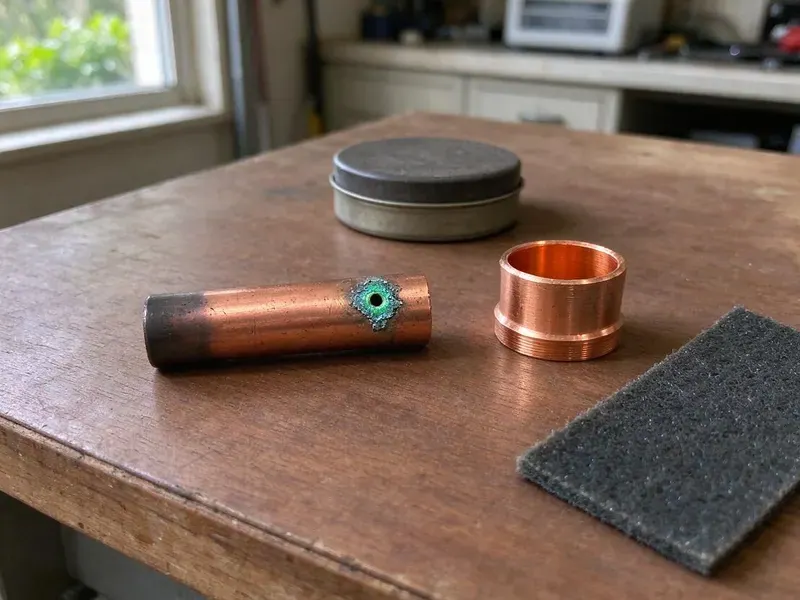

Underground Pipe Repair in Wausau, WI
When underground pipes fail in Wausau, WI, HKV Plumbing provides the expert repair you need to restore your plumbing system fast and effectively.
- Minimal-Dig Repair Methods
- Durable Repairs
- Licensed and Insured Plumbers
- Prompt, Local Service
Expert Underground Pipe Solutions in Wausau, WI.
Our skilled technicians are ready to tackle any underground plumbing challenge you face.
Your Local Team for Underground Pipe Repair in Wausau, WI
HKV Plumbing understands the challenges of underground pipe repair in Wausau, WI. Our team uses proven tools like camera inspections and acoustic leak detection to pinpoint problems without extensive digging, for a targeted and efficient repair.
Our expertise includes:
- Underground sewer lateral and cleanout repair to the property line
- Accurate leak detection for buried pipes.
- Repair of pipes damaged by tree roots or ground shift.

Additional Plumbing Repair Services in Wausau, WI
We offer expert plumbing repair services across Wausau, WI to fix leaks, restore flow, and keep your system running smoothly.


Customers
Why Choose HKV Plumbing for Underground Pipe Repair in Wausau, WI?
Underground leaks hide well, and a guess can mean digging the wrong spot. We locate first, then repair, which saves you time, money and lawn.
- Local Knowledge, Our team understands how Wisconsin climate, soil movement and local plumbing codes affect underground pipe systems.
- Modern Tools, We use modern video inspection cameras and acoustic leak detectors to accurately locate underground pipe issues.
- Small Excavations, Precise locating means we dig one small access pit whenever we can.
Citywide Coverage
No matter where you are in Wausau, we can get a locating crew to you fast. We work around pavers, artificial turf, rock landscaping and concrete without unnecessary damage.
Experienced Team
Our technicians are trained in leak detection and underground utility locating, not just pipe repair. They have dug through rock, hardpan and compacted fill and know how to work efficiently in tough ground.
Safety-First Approach
Repairs are made with materials approved for direct burial and installed at code-required depths. Where a permit or inspection is needed for service line replacement, we take care of the paperwork.
Trusted Certified Wausau Plumbing Services Professionals
At HKV Plumbing, we take pride in providing certified plumbing services throughout Wausau, WI. Backed by leading industry credentials, our experienced plumbers combine technical skill with genuine customer care. Whether it is repair, installation, or maintenance, we follow strict safety and quality standards to deliver long-lasting results you can trust.
Call Us Now PHCC Plumbing Contractor Recognition
PHCC Plumbing Contractor Recognition Better Business Bureau (BBB) Accreditation
Better Business Bureau (BBB) Accreditation Angi Certified Pro
Angi Certified Pro ISO 9001 Quality Management Certification
ISO 9001 Quality Management CertificationDurable Underground Pipe Repair Services in Wausau, WI
Water Main Underground Repair in Wausau
A leaking or broken water main can lead to major water loss and property damage. HKV Plumbing provides expert repair for underground water mains, using durable materials like PEX or copper for a long-lasting fix. We can quickly locate the break using non-invasive methods and restore your home's water supply with minimal disruption.

Polybutylene Pipe Replacement in Wausau
Many homes built in the 1980s and 1990s may have polybutylene pipes, which are prone to sudden failure due to their material composition. If you have polybutylene in your underground water lines, proactive replacement is usually recommended. We focus on safely removing and replacing these problem pipes with modern, durable alternatives, preventing future leaks in Wausau.
Pool and Outbuilding Supply Line Repair in Wausau, WI
Many properties have buried water lines feeding a pool auto-fill, a guest house, an outdoor kitchen or a detached garage. These lines are usually longer than the main service and harder to locate. We use tracer wire and acoustic equipment to find leaks along the full run. Repairs are made with direct-bury rated pipe and tested before we close up.
Storm Drain and Lateral Repair in Wausau, WI
Underground storm drains and laterals are crucial for managing rainwater runoff and preventing flooding around your property. Damage to these pipes can lead to water pooling, erosion and foundation issues. We inspect, clear and repair damaged storm drainage systems, ensuring proper water diversion and protecting your landscape and structures in Wausau, WI from water damage.
Underground Sewer Line Repair in Wausau, WI
Buried sewer laterals crack from root intrusion, soil settling and age. We camera the line to find the exact spot, then excavate and replace the damaged section with PVC. Shielded couplings make a watertight connection to the existing pipe. We confirm proper slope and flow before backfilling and tamping the trench.
Emergency Underground Pipe Services in Wausau
An unexpected underground pipe burst or severe leak can be a plumbing emergency. HKV Plumbing offers rapid-response emergency services for underground pipe repair in Wausau. Our technicians are equipped to promptly diagnose the problem and put immediate solutions in place to prevent further damage to your home or business.
Galvanized and Polybutylene Line Replacement in Wausau
Galvanized steel pipe rusts from the inside, and polybutylene pipe becomes brittle and splits without warning. If your underground service is either material, repairs are usually temporary. We replace the line with PEX or Type K copper, often by pulling the new pipe through the old path to limit digging. A new line restores pressure and removes the risk of repeated leaks.

Trenchless Underground Pipe Repair in Wausau
For homeowners in Wausau looking to limit disruption to their landscaping, HKV Plumbing offers trenchless underground pipe repair. This method involves creating small access points to repair or replace pipes without extensive digging. It's a faster, less invasive solution for certain types of pipe damage, saving time and money on property restoration.
Expert Underground Pipe Repair Near Me in Wausau, WI
We know the local soil conditions, typical service line depths and the water utilities in this area. That helps us move from locating to repair without delays. Call us to schedule a visit and get the leak stopped.
When you are looking for underground pipe repair near me, speed and accuracy matter because every hour of leaking adds to the water bill. Our local crews arrive with locating gear and repair materials ready. We find the problem, explain it and quote the fix on the spot.
HKV Plumbing at a Glance
- Fully licensed plumbing team covering Wausau, WI
- 24/7 emergency service with same-day scheduling
- Upfront, flat-rate pricing before work begins
- 4.8-star rated by 448+ Wisconsin customers
Wausau Map
Wausau Information
- Population
- 39,968
- Area codes
- 715/920/608
- Service area
- Wausau and communities within 40 miles
- Nearby
- Appleton, Oshkosh, Green Bay, Eau Claire
Shifting soil and decades-old galvanized or polybutylene service lines make buried pipe leaks a frequent and costly problem for homes in Wausau, WI. Freeze and thaw cycles move the ground each year, which can crack older clay and cast iron sewer laterals.
Expert Services
Trust our professionals for reliable HKV Plumbing solutions in Wausau, WI.
Our Specialized Plumbing Services in Wausau, WI
At HKV Plumbing, we provide a complete range of plumbing services across Wausau, WI. From leak detection to full system installations, our team ensures fast, precise, and affordable service for both residential and commercial properties. Explore our core services below:


How Our Underground Pipe Repair Process Works in Wausau, WI
We follow a clear, step-by-step approach to diagnose and repair your underground pipes, keeping you informed every step of the way.
Request a Quote
Contact HKV Plumbing by calling (414) 432-4641 to schedule an appointment. We'll discuss your concerns and arrange for an initial assessment of your underground pipe issue.
Diagnosis & Plan
Our technicians use advanced tools like video cameras and acoustic detectors to accurately pinpoint the problem. We then present a clear repair plan and upfront pricing.
Expert Repair
Once approved, our skilled team performs the necessary repairs, whether it's a trenchless solution or targeted excavation. We make sure all work meets local codes.
Frequently Asked Questions About Underground Pipe Repair in Wausau
A single repair on a buried water line usually costs $800 to $2,500 including locating and excavation. Full main water service replacement typically runs $2,500 to $6,500, and sewer lateral repairs range from $1,500 to $5,000 depending on how deep the pipe is.
For water lines we usually use PEX or Type K copper, both approved for direct burial. For sewer lines we use Schedule 40 PVC. The right choice depends on the existing pipe and local code.
Absolutely, tree roots are a very common cause of underground pipe damage, particularly in older, porous pipes or those with existing cracks. Roots seek out water sources and can infiltrate pipes, growing inside them and causing blockages or eventually fracturing the pipe. This is a frequent issue in many established Wausau neighborhoods.
Yes. Our repairs include a written workmanship warranty, and the pipe and fittings carry manufacturer warranties. We explain coverage before we start.
Common signs include a water bill that jumps without explanation, a meter that moves with all water off, low pressure and wet or sinking spots in the yard. A hissing sound near the meter box can also point to a leak.
Small repairs often do not need a permit, but full water service or sewer line replacement usually does. Work in the public right-of-way always requires coordination with the city. We handle permits when required.
HKV Plumbing uses high-quality, industry-approved materials from trusted brands known for durability and longevity. This includes PEX piping from manufacturers like Uponor or Viega, and various PVC and ABS pipe products that meet ASTM standards.
Trenchless pipe repair offers several key advantages, including minimal disruption to your yard, landscaping and concrete, which can save on restoration costs. It's usually faster than traditional excavation and less invasive, preserving the look and value of your property. This method is also durable, frequently extending the lifespan of your pipes.
What People Are Saying About Our Plumbing Experts?

Robert G.
The trenchless sewer replacement saved our front yard. They walked us through the camera inspection footage first so we knew exactly what we were paying for.
Sewer Line Replacement · La Crosse, WI
Emily R.
I called HKV Plumbing for plumbing repair, and the technician was fast, polite, and thorough. They explained the problem clearly and fixed it the same day. I will definitely hire them again. Highly recommended!
Plumbing Repair · Eau Claire, WI
Laura S.
I scheduled a water heater replacement, and the team made the process smooth and affordable. The new unit works perfectly, and they cleaned up after completing the job.
Water Heater Replacement · Green Bay, WI
Patricia H.
We had a slab leak that two other companies could not find. HKV Plumbing located it in under an hour, explained our options, and the price matched the quote to the dollar.
Slab Leak Repair · Green Bay, WIJames P.
Our commercial plumbing system had a leak under the sink, and HKV Plumbing handled it professionally. The plumbers arrived quickly and restored everything without disruption to our customers.
Commercial Plumbing · La Crosse, WI
Daniel K.
A pipe burst at 11 pm and they actually answered. The plumber showed up within the hour, shut everything down, and had us back to normal the next morning. Could not ask for more.
Emergency Plumbing · Eau Claire, WI